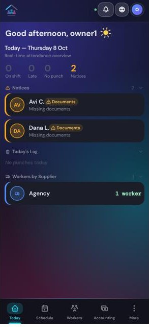
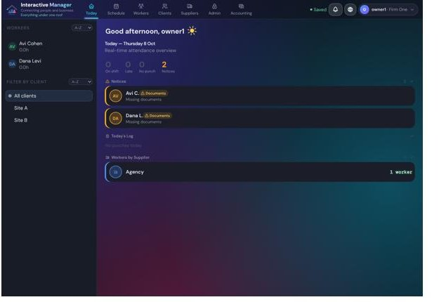
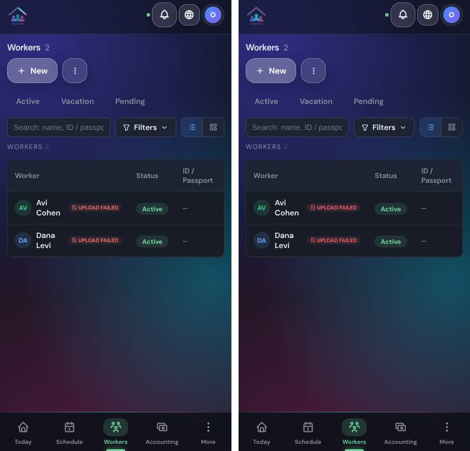
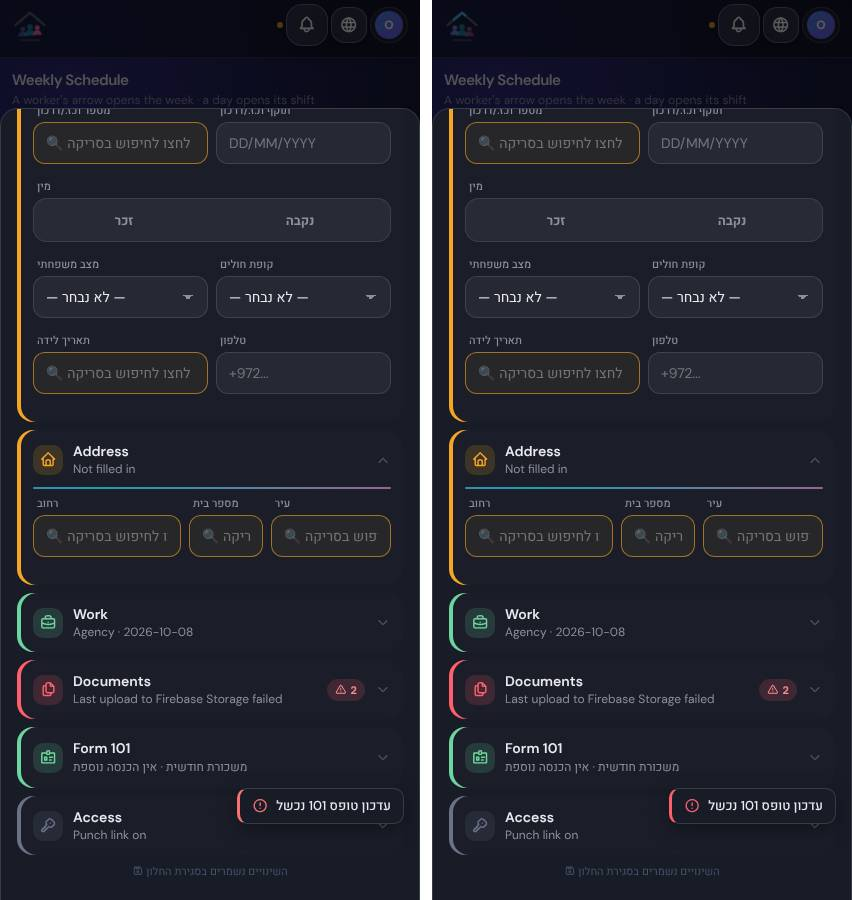

Today on a phone: greeting, four figures, Notices, Workers by Supplier, bottom bar
Today on a computer: tabs at the top, worker list and client filter at the left
Workers list on a phone
A window over the list